Quatro Imperadores
Os Quatro Imperadores são os quatro capitães piratas mais notórios e mais poderosos do mundo. Eles não são aliados nem são estritamente inimigos um do outro. Em vez disso, os quatro preferem permanecer autônomos na maioria das circunstâncias.
Estes quatro residem individualmente na segunda metade da Grand Line (conhecida como Novo Mundo), exercendo influência e controle impressionantes sobre dezenas de outras tripulações piratas e ilhas autônomas. Eles formam um dos Três Grandes Poderes.
Na decisiva Batalha de Marineford, Barba Branca, um dos Imperadores, encontrou seu fim em direção ao clímax da guerra. Barba Negra, aquele que o matou, usurpou sua posição no ano seguinte. Shanks, outro membro dos Quatro Imperadores, arbitrou um cessar-fogo para acabar com a guerra acima mencionada.
Após os eventos do Arco Ilha Whole Cake, o Jornal Econômico Mundial se referiu a Monkey D. Luffy como "o Quinto Imperador" entre os Imperadores. Isto foi devido aos eventos do arco e as entrevistas realizadas com Cavendish e Bartolomeo, que informaram os jornalistas dos 5000 membros da Grande Frota do Chapéu de Palha.
Seguindo a derrota de Kaidou e Big Mom durante o ataque à Onigashima, Luffy e Buggy foram declarados novos Imperadores, junto com Shanks e Teach.
Yonkous
| Quatro Imperadores | |||
| 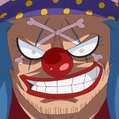 |  |
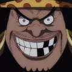 | 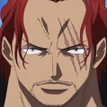 |
| Buggy | Monkey D. Luffy | Marshall D. Teach | Shanks |
| Ex-Imperadores | |||
| 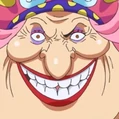 | 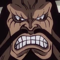 | 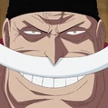 | 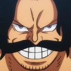 |
| Charlotte Linlin | Kaidou | Edward Newgate | Gol D. Roger |
| Tripulaçoes | |||
| 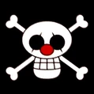 |  |
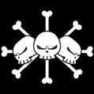 | 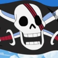 |
| Piratas Buggy | Piratas do Chapéude Palha | Piratas do BarbaNegra | Piratas do Ruivo |
| 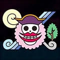 | 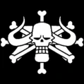 | 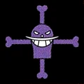 | 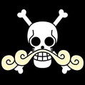 |
| Piratas da Big Mom | Piratas das Feras | Piratas do BarbaBranca | Piratas do Roger |